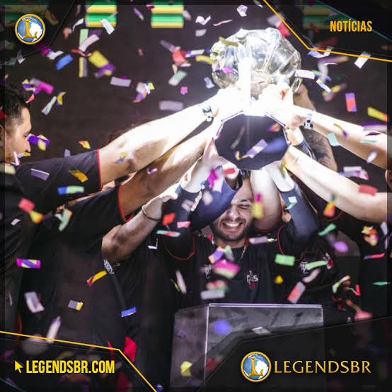
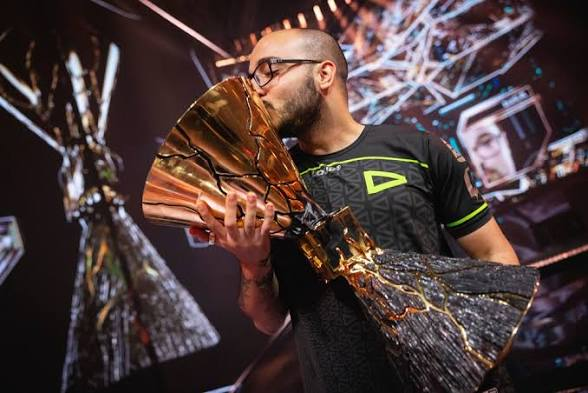

LOL

LOUD

SENTINELS

LOL

LOUD

SENTINELS
Gustavo Rossi, conhecido como Sacy, é um ex-jogador profissional brasileiro de Valorant. Ele ganhou destaque por sua habilidade como suporte (especialmente com agentes como Sova e Skye) e por sua liderança dentro do jogo.Sacy ficou famoso principalmente atuando pela LOUD, equipe com a qual conquistou o título mundial no Valorant Champions 2022. Depois disso, também jogou pela Sentinels.Ele se aposentou do competitivo, sendo lembrado como um dos maiores jogadores brasileiros da história do Valorant.